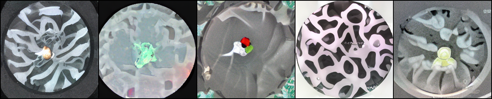
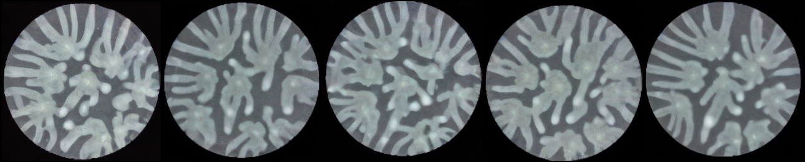

Generative augmenter for bacterial-colony replicates
A replicate-to-replicate ControlNet + Stable Diffusion model: give it one photo of a colony, it generates realistic new replicates — synthetic training data to beat experimental data scarcity.

start of training — noise

end — realistic P. aeruginosa branching
Trained the model from scratch on the full 3-dataset set (3 days, 375k steps) → my own checkpoint. It learned the distribution.
Sarthak · progress updatenext
Result 1
It works within its training domain
real source (input)generated replicatereal sibling (ground truth)
On held-out test colonies it generates plausible new replicates — varied, not memorized.
0.31generated vs real replicate (LPIPS)
0.23real vs real baseline — so ≈1.3× (near replicate-quality)
0.25sample diversity — not mode-collapsed
in-domainnext
Result 2 · the key finding
But it fails on a new species (out-of-distribution)
real source — 2-species co-culturegenerated — wrongreal sibling (ground truth)
On a genuinely novel species it ignores the input and imposes its trained branching pattern — strips the fluorescence, hallucinates tendrils. Now quantified:
74 → 346FID (realism) — 4.7× worse
1.3× → 2.3×realism vs real-replicate baseline
out-of-distributionnext
In progress · next steps
Fine-tuning on the new data to close the gap
Carved a clean held-out test split from the 2-species data (no leakage) so we can measure improvement honestly.
Built the fine-tune + auto-scoring pipeline (resumes from our model; sweeps learning rate; one checkpoint per epoch).
Ran the first fine-tune — trained all 4 epochs; 3 checkpoints salvaged.
Next: score fine-tuned vs baseline on the held-out set → does it fix the OOD failure? Then sweep LR / epochs for the optimal schedule.
⚠️ Heads-up: the lab's group space (/hpc/group/youlab, 46 TB) is 100% full — that's what killed the checkpoint save, and it will break large writes for everyone in the lab. Worth freeing space or requesting more.